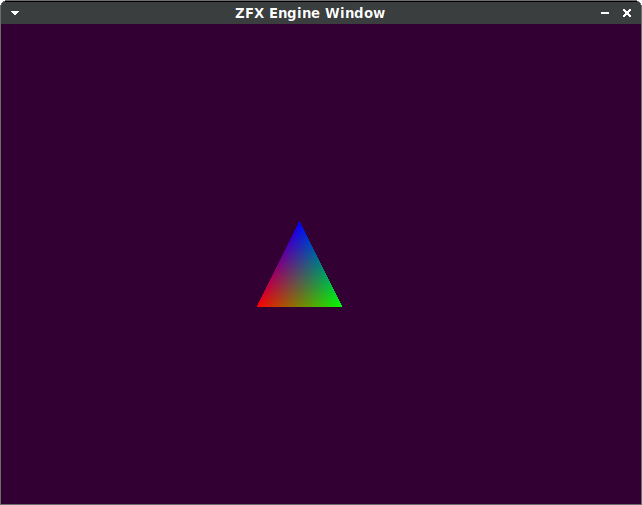
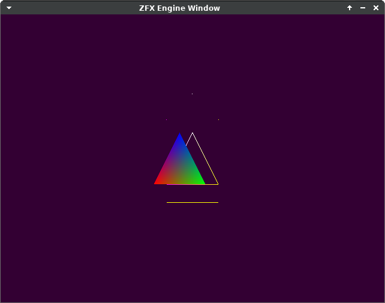
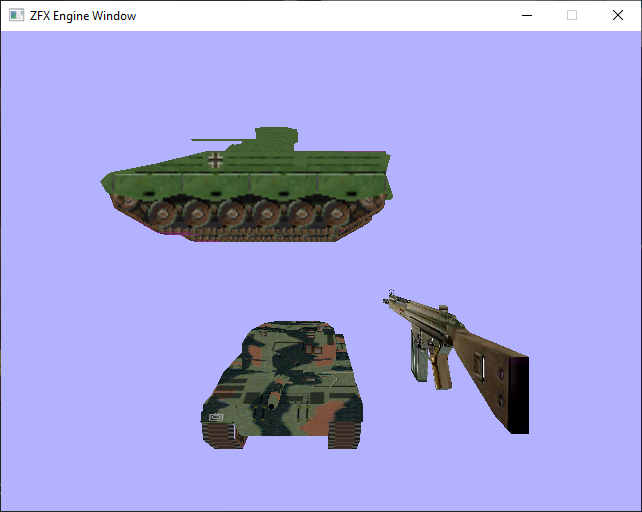
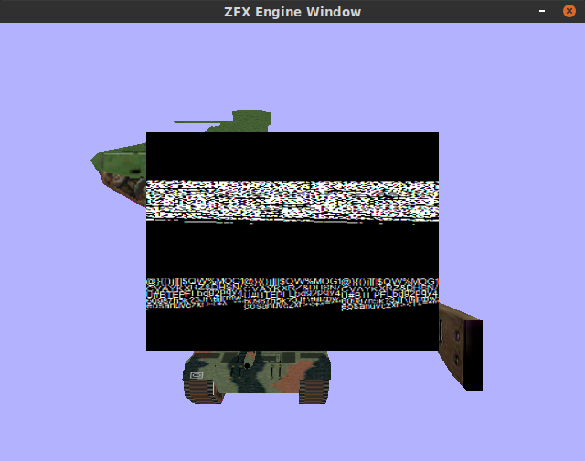
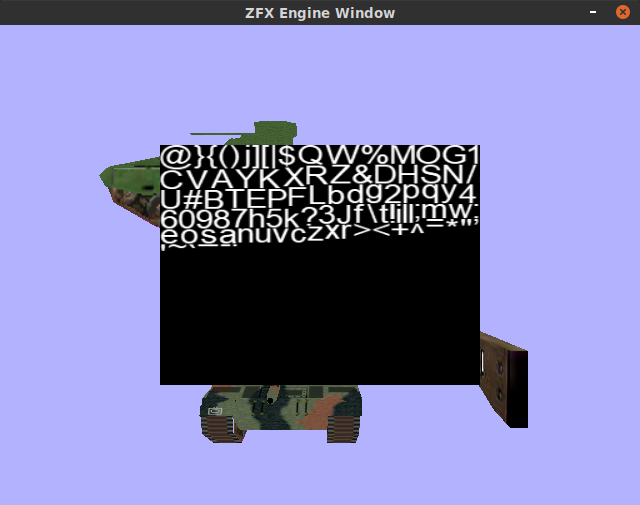

ZFX Engine OpenGL
Attempting an OpenGL implementation of ZFXEngine from "3D Game Engine Programming" by Zerbst,Duvel. I'd like to try and port it to PS3,Wii as well.

Chapter 4
07/31/2022
The book uses Visual Studio inline assembly syntax (__asm) for AVX instructions and AVX cpu detection. I instead used GCC inline asm with AT&T syntax ( https://www.ibiblio.org/gferg/ldp/GCC-Inline-Assembly-HOWTO.html) and then intrinsics. Example:
// book inline asm vector normalize:
w = 0.0f;
__asm {
mov esi, this ; vector u
movups xmm0, [esi] ; first vector in xmm0
movaps xmm2, xmm0 ; copy original vector
mulps xmm0, xmm0 ; mul with 2nd vector
movaps xmm1, xmm0 ; copy result
shufps xmm1, xmm1, 4Eh ; shuffle: f1,f0,f3,f2
addps xmm0, xmm1 ; add: f3+f1,f2+f0,f1+f3,f0+f2
movaps xmm1, xmm0 ; copy results
shufps xmm1, xmm1, 11h ; shuffle: f0+f2,f1+f3,f0+f2,f1+f3
addps xmm0, xmm1 ; add: x,x,f0+f1+f2+f3,f0+f1+f2+f3
rsqrtps xmm0, xmm0 ; recip. sqrt (faster than ss + shufps)
mulps xmm2, xmm0 ; mul by reciprocal
movups [esi], xmm2 ; bring back result
}
w = 1.0f;
// with intrinsics instead:
w = 0.0f; // clear w so it doesn't effect calculation
__m128 vec = _mm_loadu_ps(&x); // load x,y,z,w into vec
__m128 vecOrig = vec; // save copy of original values
vec = _mm_mul_ps(vec,vec);
__m128 tmp = _mm_shuffle_ps(vec,vec,0x4E);
vec = _mm_add_ps(vec,tmp);
tmp = _mm_shuffle_ps(vec,vec,0x11);
vec = _mm_add_ps(vec,tmp);
vec = _mm_rsqrt_ps(vec); // calc reciprocal square root
vecOrig = _mm_mul_ps(vecOrig,vec); // multiply by inv square root
_mm_storeu_ps(&x,vecOrig); // store result back in *this
w = 1.0f; // restore w
Chapter 6
08/29/2022
Have enough of the OpenGL render device, Vertex Cache, and Vertex Cache manager implemented to render a basic triangle. Learned you need to use glVertexAttribIPointer for integer attributes. Also learned the last argument to glDrawElements is used as a byte offset into the index buffer to use for drawing, assuming an index buffer is currently bound.
08/30/2022
Started the shaders for each vertex type in the vertex cache manager, vert cache manager render naked working.
08/31/2022
Render lines, points primitives working:
09/03/2022
Added ZFXModel class for s3d models, and fixed the uu/VERTEX struct shader. The vector-matrix multiplication order needed to be switched because of the ZFXMatrix implementation:
//gl_Position = uWvpMatrix * vec4(aPos,1.0);
gl_Position = vec4(aPos,1.0) * uWvpMatrix;
Most of the chapter 6 demo now works; not implemented are multiple windows/viewports and font drawing, also lighting:
09/14/2022
Initial Render Device CreateFont and DrawText working. Using fnt format font from https://angelcode.com/products/bmfont/, as the book implementation uses a built-in direct X library for loading Windows fonts.
stb image was not properly loading the tga format generated for some reason, and I had to convert the image to a bmp instead:

After that, we can successfully call DrawText():

09/15/2022
Started the chapter 7 demo (shaders). Just the basic unlit version for starters. Had to enable face culling and set the front face to clockwise instead of counter-clockwise:
glEnable(GL_CULL_FACE);
glFrontFace(GL_CW);